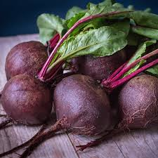
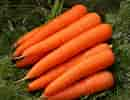
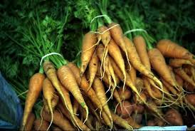

A jumbotron indicates a big grey box for calling extra attention to some special content or information. Tip: Inside a jumbotron you can put nearly any valid HTML, including other Bootstrap elements/classes. A jumbotron indicates a big grey box for calling extra attention to some special content or information.
| veggele | disease |
|---|---|
| beets | beeturia |
| carrots | caretonius |
|  |  |  |
| Beets Careful not to get hands dirty |
Carrots Not sticks, can motivate |
Asparagus Spears, Spears, Spears |